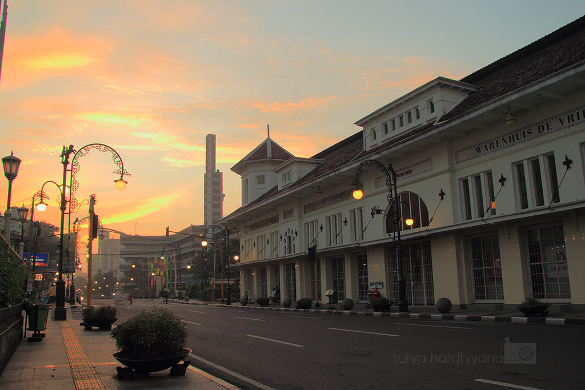
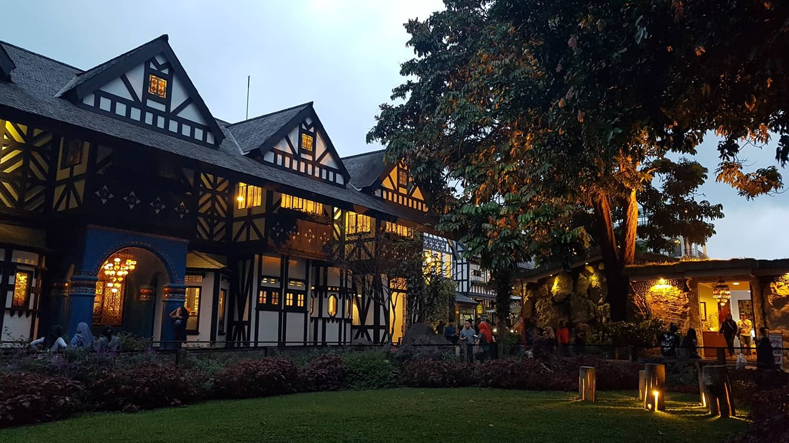
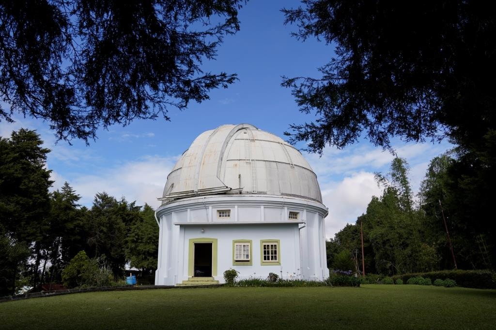

Sejarah

Kata Bandung berasal dari kata bendungan karena terbendungnya sungai
Citarum oleh lava Gunung Tangkuban Parahu yang lalu membentuk telaga. Legenda yang
diceritakan olah orang-orang tua di Bandung mengatakan bahwa nama Bandung diamnil dari
sebuah kendaraan air yang terdiri dari dua perahu yang diikat berdamping yang di sebut
perahu bandung yang digunakan oleh Bupati Bandung. R.A Wirantakusuma II, untuk
melayari Ci tarum dalam mencari tempat kedudukan kabupaten yang baru untuk menggantikan
ibu kota yang lama di Dayeuhkolot.
Berdasarkan fisolofi Sunda, kata Bandung juga berasal dari kalimat Nga-Bandung-an Banda
Indung, yang merupakan kalimat sakral dan luhur karena mengandung nilai ajaran Sunda.
berada di alam hidup yaitu di bumi dan atmosfer, baik mahluk hidup maupun benda mati.
Sinonim banda adalah harta. Indung berarti ibu atay Bumi, di sebut juga sebagai ibu
Pertiwi tempat Banda berbeda.
Geografis

Kota Bandung dikrlilingi oleh pegunungan, sehingga bentuk mortofologi wilayahnya bagaikan
sebuah mangkok raksasa, [9] secara gwografis kota ini terletak di tengah-tengah provinsi
Jawa Barat, serta berada pada ketinggian +768 m di atas permukaan laut, dengan titik
tertinggi di berada di sebelah utara dengan ketinggian 1.050 meter di atas permukaan
laut dan sebelah selatan merupakan kawasan rendah dengan ketinggian 675 meter di atas
permukaan laut.
Kota Bandung dialirin dua sungai utama, yaitu subgai Cikapundung dan sungai Citarum
beserta anak-anak sungainya yang pada umumnya mengalir ke arah selatan dan bertemu di
Sungai Citarum. Dengan kondisi yang demikian, Bandung selatan sangat rentan terhadap
masalah banjir terutama pada musim hujan.
Wisata
Sejak dibukanya Jalan Tol Cipularang, kota Bandung telah menjadi tujuan utama
menimati liburan akhir prkan terutama dari masyarakat yang berasal dari Jakarta
sekitarnya. Selain menjadu kota wisata belanja, Kota Bandung juga dikenal dengan
sejumlah besar bangunan lama berarsitektur peninggalan Belanda.
Farm House Lembang

Berada di jalur utama Bandung-Lembang, Farm House menjadi objek wisata yabg tidak
pernah sepi pengunjung. Selain karena letaknya strategis, kawasan ini juga
menghadirkan nuansa wisata khas Eropa. Semua itu diterapkan dalam bentik spot foto
instagramable.
Obsevatorium Bpsscha

Memiliki beberapa teleskop, antara lain, Refrakor Ganda Zeiss, Scmidt Bimasakti,
Refrakor Bamberg, Cassegrain GOTO, dan Teleskop Surya. Refraktor Ganda Zeiss adalah
jenis teleskop terbesar untuk meropong bintang. Benda ini diletakan pada atap kubah
sehingga saat teropong digunakan, atap tersebut harus dibuka. ObsevatoriumBosscha
boleh dikunjungi oleh siapapun, tanpa tiket. Namun, bagi yang ingin menggunakan
teleskop Zeiss, wajib mendaftarkan diri. Untuk instansi atau lembaga pendidikan,
diberikan jadwal hari Selasa sampai Jumat. Sementara itu, kunjungan individu dibuka
setiap hari Sabtu.